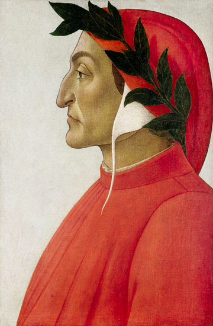
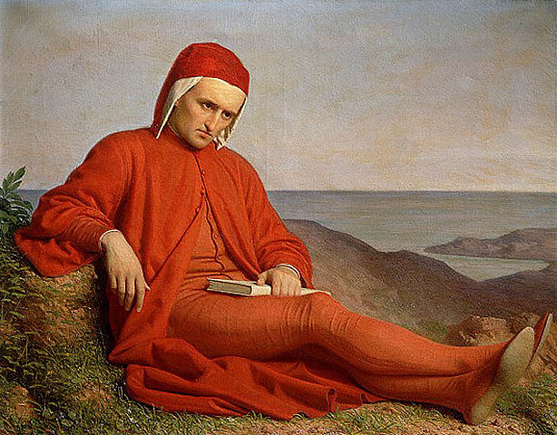
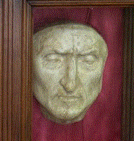

| LA VITA | |||
|
|||
| LE OPERE | |||
|

|  |
Dante di Botticelli (1495) |
Gli anni giovanili Dante Alighieri nacque a Firenze nella seconda metà del mese di maggio del 1265 da una famiglia della piccola nobiltà. Sua madre morì quando egli aveva tredici anni e suo padre quando ne aveva diciassette. L'evento più importante della sua giovinezza fu l'incontro, avvenuto nel 1274, con Beatrice, giovane donna che egli amò ed esaltò come simbolo della Grazia Divina, prima nella Vita nuova e più tardi nella Divina Commedia (la sua opera più conosciuta). Nota con il solo emblematico nome di Beatrice, colei che ha ispirato Dante non possiede un'identità storica certa. Tuttavia, alcuni ricercatori sono giunti a identificarla con Beatrice Portinari, giovane nobile fiorentina morta nel 1290 all'età di vent'anni. Secondo quanto dichiarato da Dante nelle proprie opere, egli non la conosceva affatto: la vide soltanto per tre volte, senza mai rivolgerle la parola. Non si sa molto sull'educazione ricevuta dal poeta, oltre al fatto che egli soggiornò a Bologna attorno al 1285, per compiere gli studi superiori. In ogni caso, le sue opere rivelano un'erudizione tale da coprire quasi tutto lo scibile dell'epoca. Dante fu particolarmente influenzato dalle opere del filosofo e retore fiorentino Brunetto Latini, che gioca infatti un ruolo di rilievo nella Divina Commedia. Egli frequentò inoltre numerosi poeti, legandosi in particolar modo a Guido Cavalcanti e Cino da Pistoia. Sebbene fosse a quei tempi una delle città più potenti d'Italia, Firenze era divisa in due fazioni a causa dei conflitti di potere tra i sostenitori di due influenti famiglie, i guelfi e i ghibellini. Dante si aggregò subito ai guelfi e, nel mese di giugno 1289, partecipò alla battaglia di Campaldino come soldato nel loro esercito. In questa battaglia, i guelfi Fiorentini trionfarono nettamente sulle truppe dei ghibellini di Pisa e Arezzo, ma i vincitori si divisero ben presto a loro volta in "neri" e "bianchi". Fu proprio come guelfo "bianco" che Dante venne in seguito condannato e bandito. In quegli anni, Dante sposò Gemma Donati, appartenente a una famiglia guelfa importante e assai in vista a Firenze. |
 |
Dante Alighieri di Agnolo Bronzino (1530) |
La vita politica Durante gli anni seguenti (dal 1295 al 1301 circa), Dante partecipò attivamente alla tormentata vita politica di Firenze. Secondo quanto riportato in alcuni registri del 1295, egli ricoprì infatti svariate funzioni nell'amministrazione della città. In particolare, nel 1300 venne inviato in missione diplomatica a San Gimignano, piccolo villaggio toscano; nello stesso anno, fu anche eletto priore (ossia magistrato) nel Consiglio insieme ad altre cinque persone, ricoprendo tale carica per soli due mesi. La rivalità tra le due fazioni in cui erano divisi i guelfi a Firenze si intensificò durante il suo mandato. I "neri", che si opponevano al potere imperiale, consideravano il Papa come un alleato, mentre i "bianchi" volevano rimanere indipendenti sia dal Papa che dall'Imperatore. Al fine di preservare la pace nella città, il Consiglio decise di esiliare i capi delle due fazioni. Tuttavia, tramite l'intervento di Papa Bonifacio VIII, i capi dei "neri" riuscirono a tornare a Firenze alla fine del 1301, impadronendosi del potere. Nel marzo 1302, mentre il poeta era in missione a Roma presso il Papa, i "neri" lo bandirono dalla città per un periodo di due anni, condannandolo anche a una pesante ammenda. Poiché Dante si trovava nell'impossibilità di pagare la somma richiesta, la sanzione venne commutata in pena di morte in caso di suo ritorno nella città natale. Dopo questo episodio, Dante conservò per sempre la sensazione di essere stato ingannato da Bonifacio VIII. Egli trascorse i suoi anni da esule a Verona e in altre città del nord Italia; è inoltre noto che soggiornò a Parigi tra il 1307 e il 1309. Le sue convinzioni politiche ne risultarono profondamente modificate: abbracciando la causa dei ghibellini, Dante auspicò da quel momento la realizzazione di un'unione europea governata da un Imperatore illuminato. Le aspirazioni politiche del poeta vennero di nuovo stimolate dall'arrivo in Italia di Enrico VII di Lussemburgo, Imperatore del Sacro Romano Impero Germanico (1310), il cui obiettivo era quello di porre l'Italia sotto la sua sovranità. In questo periodo di intensa attività politica, Dante scrisse a numerosi principi e dirigenti politici italiani per esortarli ad accogliere Enrico VII, considerando la "sottomissione" a costui come il solo mezzo per risolvere gli acuti conflitti tra le città. La morte dell'Imperatore, sopraggiunta a Siena nel 1313, distrusse ogni sua speranza. Fu probabilmente durante il soggiorno italiano di Enrico VII che Dante redasse un trattato in latino, la Monarchia (intorno al 1313, sulla monarchia universale). Tale opera rappresenta un'esposizione della sua filosofia politica, incentrata ancora sull'idea di una separazione totale tra Chiesa e Stato. |
|  |
Dante Alighieri in esilio di Domenico Pelarlini |
L'esilio Nel 1316, le autorità fiorentine proposero al poeta di tornare in città, ma le condizioni poste per tale ritorno erano le stesse riservate solitamente ai criminali amnistiati. Dante rifiutò quindi decisamente la loro proposta, affermando che sarebbe tornato nella città natale solo a patto che gli venissero conferiti la dignità e gli onori che gli spettavano. Egli passò quindi il resto dei suoi giorni in esilio, trascorrendo gli ultimi anni a Ravenna, dove morì nella notte tra il 13 e il 14 settembre 1321. La città di Ravenna non ha mai voluto privarsi delle sue spoglie, nonostante la volontà dei Fiorentini di vederle inumate nella loro città. Vista l'impossibilità di realizzare ciò, Firenze ha edificato nella chiesa di Santa Croce un cenotafio in sua memoria. |
